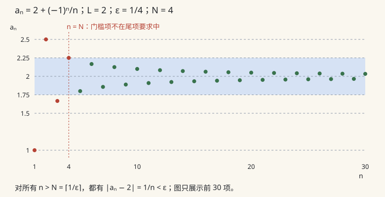

数分 I · 实数完备性与极限
整座分析大厦立在一块地基上：实数没有"洞"（完备性）。本页先立地基（六大等价定理），再建两层楼：数列极限与函数极限，收尾于连续函数的四大定理。
1. 实数完备性：六大等价定理
定义（上确界） 非空集 \(S \subset \mathbb{R}\) 的上确界 \(\sup S\) 是最小的上界：1. \(\forall x \in S,\ x \leq \sup S\)；2. \(\forall \varepsilon > 0,\ \exists x \in S,\ x > \sup S - \varepsilon\)。下确界 \(\inf S\) 对偶。
以下六条两两等价，共同刻画"实数轴无洞"（\(\mathbb{Q}\) 上全部失效——这是背它们的最好方式：想想 \(\{x \in \mathbb{Q}: x^2 < 2\}\) 如何逐条破坏它们）：
| 定理 | 陈述 | 典型用途 |
|---|---|---|
| 确界原理 | 非空有上界的集合必有上确界 | 定义 \(e\)、构造性证明的起点 |
| 单调有界定理 | 单调递增有上界的数列必收敛（\(\to \sup\)） | 递推数列收敛性 |
| 闭区间套定理 | \([a_{n+1},b_{n+1}] \subset [a_n,b_n]\) 且长度 \(\to 0\)，则交集为单点 | 二分法构造、存在性证明 |
| 聚点定理（B–W） | 有界无穷点集必有聚点；即有界数列必有收敛子列 | 紧性论证的核心引擎 |
| Cauchy 收敛准则 | 数列收敛 \(\iff\) \(\forall\varepsilon\,\exists N:\ m,n>N \Rightarrow \lvert a_m - a_n\rvert < \varepsilon\) | 不知道极限值也能判收敛 |
| 有限覆盖定理（H–B） | 闭区间的任意开覆盖必有有限子覆盖 | "局部性质 → 整体性质"的桥 |
证明环路思路（复习时能画出这个环即算过关）：确界 ⇒ 单调有界（递增有上界数列收敛到其上确界，用确界的第 2 条验证 ε-N）⇒ 闭区间套（左端点递增有上界）⇒ 聚点（对有界数列所在区间反复二分，每次选含无穷多项的一半，区间套出聚点）⇒ Cauchy（Cauchy 列有界 → 有收敛子列 → Cauchy 性把全列拖向子列极限）⇒ 确界（对上界集合二分构造）。有限覆盖与闭区间套互推（反证：无有限子覆盖则二分出一列"坏区间"套向一点，该点的覆盖元即矛盾）。
🔗 AI 衔接：Cauchy 准则是"迭代算法收敛性"的原型语言；压缩映射原理（泛函页）与梯度下降的收敛证明都建在完备性上。
2. 数列极限

定义（\(\varepsilon\)-\(N\)） \(\lim_{n\to\infty} a_n = A \iff \forall \varepsilon > 0,\ \exists N,\ \forall n > N:\ |a_n - A| < \varepsilon\)。
基本性质：极限唯一；收敛必有界；保号性（\(A > 0\) 则从某项起 \(a_n > \frac{A}{2} > 0\)）；保不等式；夹逼定理（\(a_n \leq c_n \leq b_n\) 且两端同趋 \(A\) ⇒ \(c_n \to A\)）；四则运算（分母极限非零）。
子列：\(a_n \to A \iff\) 每个子列都 \(\to A\) \(\iff\) 奇偶子列同趋 \(A\)。逆否用法：找到两个极限不同的子列 ⇒ 发散（如 \((-1)^n\)）。
重要极限与技巧：
定理（Stolz，\(\tfrac{*}{\infty}\) 型） \(\{b_n\}\) 严格递增趋于 \(+\infty\)，若 \(\lim \dfrac{a_{n+1} - a_n}{b_{n+1} - b_n} = L\)（可为 \(\pm\infty\)），则 \(\lim \dfrac{a_n}{b_n} = L\)。——数列版洛必达，处理平均值型极限的首选（例：\(a_n \to a \Rightarrow \frac{a_1 + \cdots + a_n}{n} \to a\)，取 \(b_n = n\) 秒杀）。
上极限与下极限：\(\varlimsup a_n = \lim_{n\to\infty} \sup_{k \geq n} a_k\)（最大的子列极限）。收敛 \(\iff \varlimsup = \varliminf\) 有限。用途：不假设收敛时也能操作（级数根值判别法的严格形式用的就是它）。
3. 函数极限
定义（\(\varepsilon\)-\(\delta\)） \(\lim_{x \to x_0} f(x) = A \iff \forall\varepsilon>0\ \exists\delta>0:\ 0 < |x - x_0| < \delta \Rightarrow |f(x) - A| < \varepsilon\)。（注意挖掉 \(x_0\) 本身；单侧极限、\(x\to\infty\) 版本同构。）
定理（Heine 归结原则） \(\lim_{x\to x_0} f(x) = A \iff\) 对任何以 \(x_0\) 为极限的数列 \(x_n \neq x_0\) 都有 \(f(x_n) \to A\)。——函数极限与数列极限的换乘站；证函数极限不存在的利器（找两条数列路径极限不同，如 \(\sin\frac1x\) 在 \(0\) 处）。
两个重要极限：
无穷小的阶：\(f = o(g)\) 指 \(f/g \to 0\)；\(f = O(g)\) 指 \(f/g\) 有界；\(f \sim g\) 指 \(f/g \to 1\)。等价无穷小替换（乘除可换、加减慎换）速查（\(x \to 0\)）：
4. 连续函数
定义 \(f\) 在 \(x_0\) 连续 \(\iff \lim_{x\to x_0} f(x) = f(x_0)\)。间断点分类：第一类（左右极限都存在：相等为可去、不等为跳跃）、第二类（至少一侧极限不存在，如振荡 \(\sin\frac1x\)、无穷 \(\frac1x\)）。
闭区间上连续函数四大定理（全部依赖完备性，开区间/不连续均有反例）：
定理 1（有界性） \(f \in C[a,b]\) 必有界。思路：反证，取 \(|f(x_n)| > n\)，B–W 抽收敛子列 \(x_{n_k} \to \xi\)，连续性给出 \(f(x_{n_k}) \to f(\xi)\) 有限，矛盾。
定理 2（最值） \(f \in C[a,b]\) 必取到最大最小值。思路：设 \(M = \sup f\)（定理 1 + 确界原理），取 \(f(x_n) \to M\)，B–W 子列收敛到 \(\xi\)，连续性得 \(f(\xi) = M\)。
定理 3（介值 / 零点存在） \(f(a)f(b) < 0 \Rightarrow \exists \xi \in (a,b),\ f(\xi) = 0\)；一般地连续函数取遍两端点值之间的一切值。思路：二分法 + 闭区间套（每次选变号的一半），或对 \(\{x: f(x) < 0\}\) 用确界。
定理 4（Cantor 一致连续） \(f \in C[a,b] \Rightarrow f\) 在 \([a,b]\) 一致连续（\(\delta\) 只依赖 \(\varepsilon\) 不依赖位置：\(\forall\varepsilon\,\exists\delta:\ |x'-x''|<\delta \Rightarrow |f(x')-f(x'')|<\varepsilon\)）。思路：反证 + B–W，或有限覆盖（局部连续的 \(\delta\)-邻域覆盖 \([a,b]\)，取有限子覆盖统一 \(\delta\)——"局部到整体"的教科书示范）。
对比记忆：\(f(x) = \frac1x\) 在 \((0,1)\) 连续但不一致连续（洞被挤压）；\(\sqrt{x}\) 在 \([0,+\infty)\) 一致连续（导数无界≠不一致连续）。
5. 典型例题
例 1（递推数列，单调有界法标准流程） \(a_1 = \sqrt{2},\ a_{n+1} = \sqrt{2 + a_n}\)，证明收敛并求极限。 解：1.归纳证有界：\(a_n < 2\)（若 \(a_n<2\) 则 \(a_{n+1} = \sqrt{2+a_n} < \sqrt{4} = 2\)）；2.证递增：\(a_{n+1}^2 - a_n^2 = 2 + a_n - a_n^2 = (2-a_n)(1+a_n) > 0\)；3.单调有界定理知收敛，设 \(A\)，对递推式取极限 \(A = \sqrt{2+A}\)，解得 \(A = 2\)（负根舍）。流程"先证存在，再解方程"不可颠倒——对发散数列解方程会得到假极限。
例 2（Stolz） 求 \(\lim_{n\to\infty} \dfrac{1 + \frac12 + \cdots + \frac1n}{\ln n}\)。 解：Stolz，\(\dfrac{a_{n+1}-a_n}{b_{n+1}-b_n} = \dfrac{1/(n+1)}{\ln(1 + 1/n)} \to \dfrac{1/(n+1)}{1/n} \to 1\)。
例 3（Heine 判不存在） 证明 \(\lim_{x\to 0}\sin\frac1x\) 不存在：取 \(x_n = \frac{1}{2n\pi} \to 0\) 与 \(y_n = \frac{1}{2n\pi + \pi/2} \to 0\)，则 \(\sin\frac{1}{x_n} = 0\)、\(\sin\frac{1}{y_n} = 1\)，两条路径极限不同。\(\blacksquare\)
下一页：把"变化率"严格化——一元微分学，中值定理链是全页的主梁。